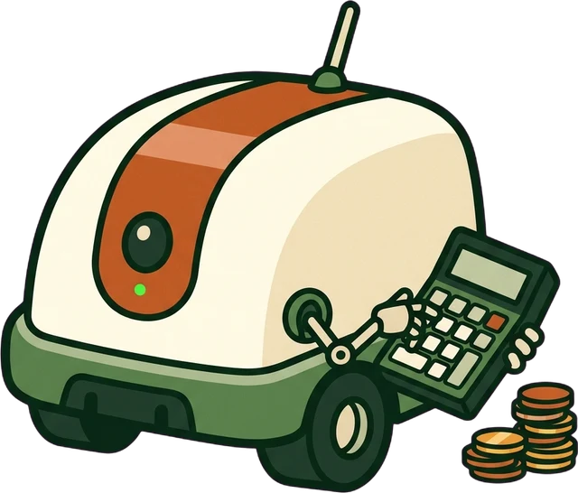

Accueil › Outils › Coût sur 5 ans
Robot ou tondeuse : combien sur 5 ans ?

Calculateur
Sur 5 ans
Voir les robots
Comment ce calcul est-il fait ?
Robot : prix moyen des robots notés pour cette surface, un jeu de lames par an et l’électricité. Thermique : prix moyen, essence, huile et révision annuelle. Les chiffres de cette maquette sont des exemples.
Et une tondeuse à batterie ?
Elle coûte moins cher à l’usage qu’une thermique, mais vous passez toujours le même temps derrière.